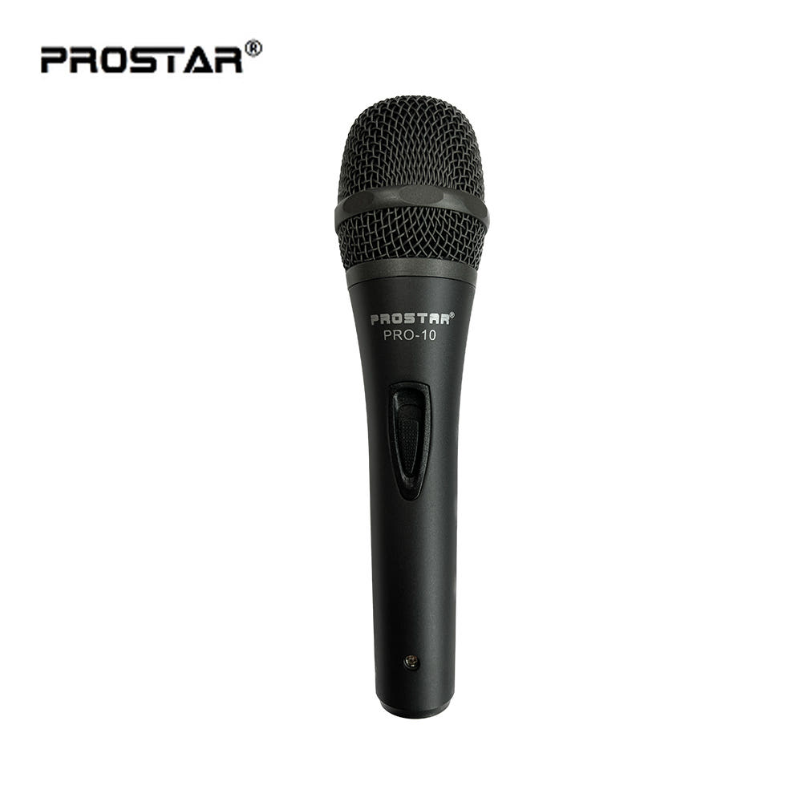
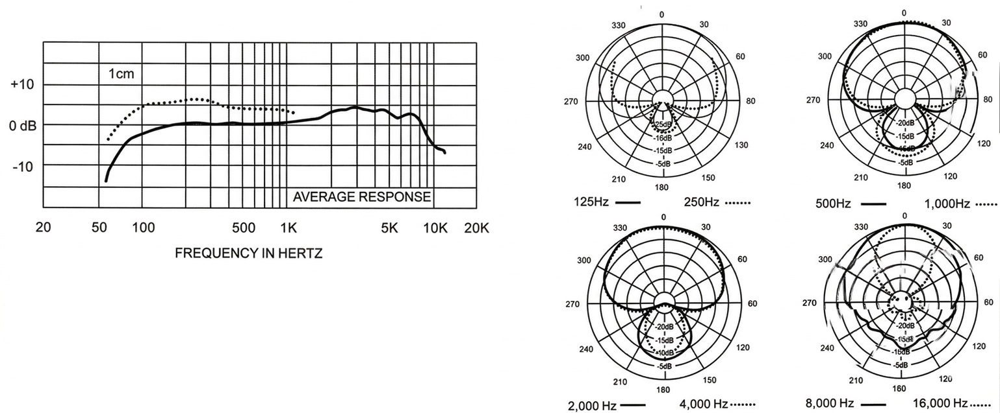

PROSTAR Pro 10은 라이브 사운드 현장에서 보컬의 캐릭터를 우아하게 포착하도록 설계된 프리미엄급 슈퍼카디오이드 다이나믹 마이크입니다. 정교하게 튜닝된 주파수 응답과 강력한 지향성이 거친 투어 환경에서도 깨끗하고 디테일한 보컬을 보장합니다.

라이브 보컬을 위한 프리미엄급 다이나믹 마이크. 정교한 주파수 응답과 슈퍼카디오이드 지향성이 어떤 보컬 캐릭터에도 자연스럽게 어우러집니다.
슈퍼카디오이드 폴라 패턴은 시스템 피드백과 주변 음원의 크로스토크 간섭에 대한 강력한 방어력을 제공하여, 피드백 전 게인 여유가 넉넉하고 스테이지 믹스가 한층 깨끗하게 정리됩니다. 50 Hz – 15 kHz 대역에서 세밀하게 튜닝된 응답 특성으로 보컬의 디테일과 프레즌스를 그대로 담아냅니다.
음악과 스피치를 위한 보컬 마이크로 설계되었지만, 다이나믹 캡슐이 필요한 악기나 기타 앰프 마이킹 용도로도 충분히 활용할 수 있는 범용성을 갖추고 있습니다. 견고한 텍스처드 블랙 새틴 핸들과 안정적인 섀시 구조로 실전 투어·공연장의 거친 사용 환경에서도 신뢰성을 보장합니다.
제조사 매뉴얼이 강조하는 Pro 10의 핵심 기술 포인트입니다.
제조사 공식 매뉴얼 기준 전기·물리 특성 사양입니다.
| Element Type | Dynamic |
|---|---|
| Frequency Response | 50 Hz – 15,000 Hz |
| Polar Pattern | Supercardioid |
| Sensitivity (Open Circuit, 1 kHz) | 2.2 mV/Pa (−54.5 dBV) |
| Polarity | 다이어프램 양압 시 Pin 2에 양의 전압 (Pin 3 기준) |
| Rated Impedance | 600 Ω |
| Microphone Connector | 3-pin XLR-type |
| Finish | Textured Black Satin Handle |
| Dimensions | Length 187.0 mm · Width 50.0 mm · Shank 25.0 mm |
| Accessories Included | Stand adapter (Euro-thread insert) · Soft zippered gig bag · 5 m XLR(F)–6.35 TS(M) 케이블 |
| Net Weight | 325 g |

PROSTAR Pro 10은 구매 후 바로 현장에서 사용할 수 있도록 3종의 필수 구성품이 완비된 풀 패키지로 제공됩니다.
제조사 매뉴얼의 권장 사용법입니다. 마이킹 기법은 개인의 선호에 따라 달라지지만, 최적 성능을 얻기 위한 기본 가이드로 참고하세요.
라이브 보컬을 중심으로 악기 마이킹, 스피치, 방송까지 폭넓게 활용할 수 있는 범용 다이나믹 마이크입니다.